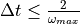
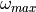
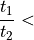
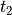
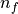
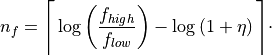

input_output module¶
This module includes functions that deal with reading and interpreting input data, and with writing diagnostics information and final results.
-
input_output.check_input(data, file_name)¶ Routine to check the input data for errors
- Parameters
data – (dict) with FEM input parameters
file_name – (string) full path of ASCII file to write error messages
- Returns
(void)
-
input_output.read_input(file_name, write_file)¶ Routine to read the FEM input parameter file. The output data has the following structure
data["MaxCalcDist"] (float) maximum distance of calculation data["MaxCalcDepth"] (float) maximum depth of calculation data["MinLayerThickness"] (float) minimum layers thickness for the vertical discretisation (not used) data["LowFreq"] (float) minimum frequency of interest data["HighFreq"] (float) maximum frequency of interest data["CalcType"] (int) type of calculation 1=centdiff, 2=harmresp, 3=programme decides data["SolverType"] (int) *solver type 1=scipy.spsolve, 2=umfpack, 3=pardiso [default = 3] data["Ground"]["Depth"] (float) array with depth of the top of each layer data["Ground"]["E"] (float) array with Young's modulus per layer data["Ground"]["Lithology"] (string) with lithology per layer data["Ground"]["damping"] (float) array with damping ratio per layer data["Ground"]["rho"] (float) array with mass density per layer data["Ground"]["v"] (float) array with Poisson's ratio per layer data["Ground"]["Thickness"] (float) array) with thickness per layer data["NumLayers"] (float) number of layers data("Bounds") (int) *boundary condition type optional [default = 3] data("TimeIncrementFactor") (float) *safety factor for critical time step [default = 0.6] data("TimeIncrementMaxIterations") (int) *maximum number of iterations to determine critical time step [default = 1000] data("TimeIncrementTolerance") (float) *relative tolerance to determine critical time step [default = 1E-5] data("TimeEndFactor") (float) *multiplication factor to determine simulation end time [default = 2.0] data("ForceRadius") (float) *radius at which force is applied [default = 1.0] data("MethodDecisionFactor") (float) *bias factor to decide which method is preferred [default = 1.0] data("MaxElementRatio") (float) *maximum finite element geometry ratio [default = 3.0] data("ElementsPerWave") (float) *number of elements per wave for discretization [default = 10] data("FreqIncrementFactor") (float) *factor to scale number of frequency lines [default = 1.0] data("ForcingFreqIncrement") (float) *frequency increment to generate white noise [default = 1E-2] data("ConsistentInfStiffness") (bool) *switch for consistent or lumped infinite stiffness [default = True] data("ConsistentInfDamping") (bool) *switch for consistent or lumped infinite damping [default = True]
- Parameters
file_name – (string) full path of JSON file containing the FEM input parameters
write_file – (string) full path of TXT file to write the process updates
- Returns
(dict) FEM input parameters
*The content of the data dictionary is directly read from the input JSON file. This list of parameters contains is more elaborate than the one described in the section about the input JSON file. The additional parameters can be seen as expert parameters to better tune the computations. These parameters can also be set in the input JSON file, e.g. for settingSolverType=3:{ "Name":"Soil1", "MaxCalcDist":25, ... "SolverType":3, ... "Ground":{ "Depth":[0,5,20], "E":[12218362.22,19232349.91,19092817.25], "Lithology":["6\/5\/4","4\/5","4\/5"], "damping":[0.018,0.063,0.049], "rho":[1404.74,1552.14,1515.39], "v":[0.22,0.23,0.49] } }Not setting these additional parameters leads to assuming the default values which are tuned to work work in most cases.
"TimeIncrementFactor"
In linear analysis the central difference method (centdiff) is undoncitionally stable when the chosen time step (for integrating through time) , where  is the maximum circular frequency of the system. The"TimeIncrementFactor"is a safety factor that changes the critical time step by this value."TimeIncrementTolerance"
The procedure to determine the maximum circular frequency is based on the power method, which is an iterative method. Convergence of the method is established at iteration by check the relative change of the maximum
eigenfrequency
by check the relative change of the maximum
eigenfrequency
"TimeIncrementTolerance""TimeEndFactor"
When thecentdiffmethod is applied to eventually compute the transfer functions, the soil is excited by white noise and an explicit simulation of the resulting behaviour is performed. In order to approach a stationary solution the simulation has to be performed over a sufficiently long time period. Its length is determined by first computing the time it takes for a shear/secondary wave to travel from the point of excitation to the right side of the geometric domain in the top layer. Subsequently this time is multiplied with"TimeEndFactor"."MethodDecisionFactor"
WhenCalcType == 3the programme decides which method (centdifforharmresp) is chosen based on the estimated CPU times for either method. For accuracy reasons it is recommended to apply theharmrespmethod. This bias towardsharmrespcan be expressed by"MethodDecisionFactor". The methodcentdiffis only chosen if
"MethodDecisionFactor",where
 is the estimated time for
is the estimated time for centdiffand  the estimated time forharmresp."MaxElementRatio"
In earlier times when iso-p elements were still popular (and they still are in most commercial explicit codes for efficiency reasons), finite elements suffered from severe distortion locking. In order to battle this, a maximum element distortion ratio of 3 is imposed. For rectangular elements this ratio is defined as the ratio between the longest and the shortest edge. With the presently deployed elements the element distortion demands are not that high, and for efficiency reasons the"MaxElementRatio"can be set higher."FreqIncrementFactor"
The frequencies at which theharmrespmethod determines the transfer functions are logarithmically distributed between"LowFreq"and"HighFreq". The number of frequencies  is determined as
"FreqIncrementFactor",where
 is the maximum between 0.1 and the average hysteretic damping in all layers.
is the maximum between 0.1 and the average hysteretic damping in all layers."ForcingFreqIncrement"
In thecentdiffmethod, the soil is excited by white noise. This noise is generated by the superposition of single sines. The frequencies of these sines are capped at 110% of"HighFreq"and they are incremented by"ForcingFreqIncrement".
-
input_output.write_model_info(file_name, data, max_elem_size, elem_count, nodes, elements, node_id)¶ Routine to write information of the model into an ASCII file
- Parameters
file_name – (string) full path of ASCII file to write the model info
data – (dict) with FEM input parameters
max_elem_size – (float) array [NL] maximum finite element size per layer (NL: number of soil layers)
elem_count – (int) array [NL, 2] number of finite elements per layer in each direction (radial, vertical)
nodes – (float) array [NP, 2] nodal coordinates in radial and vertical direction (NP: total number of nodes)
elements – (int) array [NE, 4] nodal numbers of each element (NE: total number of elements)
node_id – (int) array [NP, 2] equation numbers of the radial and vertical displacement of each node
- Returns
(void)
-
input_output.write_output(file_name, result)¶ Routine to write the results in a JSON file
- Parameters
file_name – (string) full path to JSON file in which the results are written
result – (dict) containing the compliance spectra from excitation to response points
- Returns
(void)